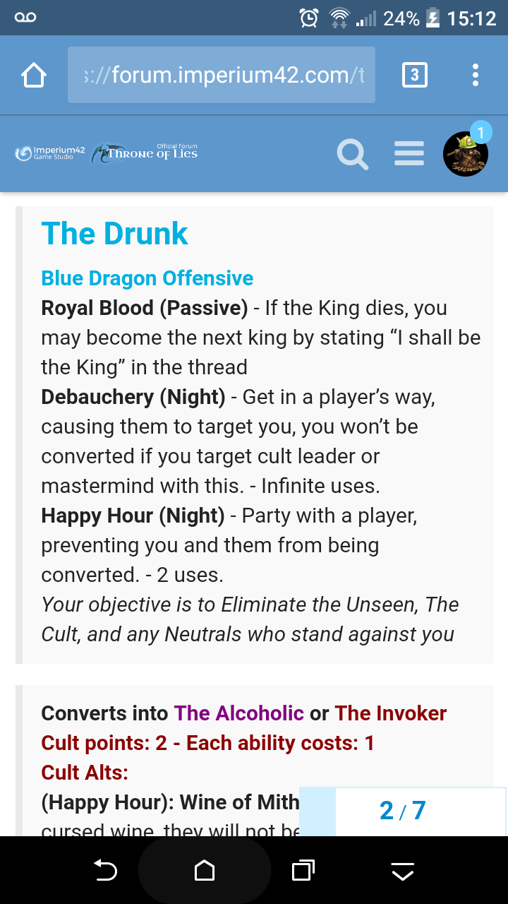

Should this be true then Rope’s Squire claim or someone already have been converted have lied.
Who did Fruit link last night? Wasn’t it Rope N1 and Ashe N2?
I don’t think we have a possessor though
That doesn’t explain how Wolfy got both occupied and forced to redirect.
He could only be redirected if occupy immune though, right?
He could only be redirected if he’s NOT occupy immune. Drunk can’t redirect immune people.
Really?
In ToL at least. Not sure if it’s different in FoL.
Drunk isn’t immune to occupy however.
It doesn’t say that here

I know. It doesn’t say it in ToL either. But that’s how it works. I checked with Boslof when there was a dispute about it a few weeks back. Drunk’s redirect is a form of occupation.
That’s not how it works here. Kings guards can be redirected for example
Hmm, fair enough. But regardless, the fact that he got redirected and there’s no dead Drunk should show that Wolfy isn’t a killer class at least.
2 Likes
Yeah I saw in-game how this works, it won’t be 100% accurate ‘Escort tried to roleblock Serial Killer, Serial Killer attacks Escort instead’ thing, but the example is there.
Hmm… what if Wolfy is possessor and controlled the drunk? Nah, that seems too long winded
I doubt the possessor got Fruit.
Could be. I don’t know how it’d work since Possessor picks two people, maybe if Drunk bumps into him he makes the Drunk kill the target instead. The only other person that claimed occupied today is Fruit and he’s Psychic, so I don’t think so unless Sketch or one of the others who haven’t checked in chime in with being occupied as well.
Wait, so who have you occupied?
I did say Fruit, Fruit being occupied doesn’t stop him from using Link minds.
Ok… hmm. So, who did Fruit actually talk to the other night?